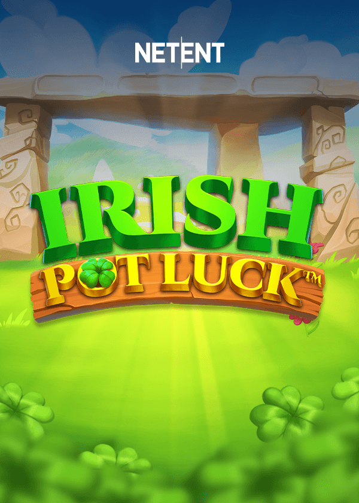

Irish Pot Luck - RTP, reseña y dónde jugar

| Proveedor | NetEnt |
|---|---|
| Tipo de juego | Tragamonedas de video |
| Tema | suerte irlandesa |
| RTP | Varía según el casino (ver preguntas frecuentes) |
| Móvil | Sí |
Resumen
Irish Pot Luck sigue el arcoíris hasta la olla de oro irlandesa.
Un duende travieso sonríe desde la esquina, cuidando su tesoro.
Alegre, afortunado y agradable a la vista.
Dónde jugar Irish Pot Luck
Irish Pot Luck está disponible en casinos online que ofrecen juegos de NetEnt. Empieza con nuestras listas verificadas:
Nigeria | Brasil | México | Kenia | Sudáfrica | Colombia | India
Preguntas frecuentes sobre Irish Pot Luck
¿Cuál es el RTP de Irish Pot Luck?
NetEnt lanza Irish Pot Luck con varios ajustes de RTP, y cada casino elige uno de ellos. La cifra exacta puede variar entre casinos. Para comprobarla, abre la información del juego o la tabla de pagos dentro del juego en el casino donde juegues.
¿Puedo jugar a Irish Pot Luck gratis?
Muchos casinos online permiten probar Irish Pot Luck en modo demo sin depositar. Elige un casino de nuestras listas y busca la opción de demo o juego gratis si quieres probarlo primero.
¿Dónde puedo jugar a Irish Pot Luck con dinero real?
Irish Pot Luck está disponible en casinos que ofrecen juegos de NetEnt. Nuestras listas cubren Nigeria, Brasil, México, Kenia, Sudáfrica, Colombia e India, y solo incluyen operadores que hemos verificado.
¿Irish Pot Luck funciona en el móvil?
Sí. Como todos los lanzamientos de NetEnt, Irish Pot Luck funciona en el navegador de teléfonos y tabletas, sin necesidad de descargar nada.